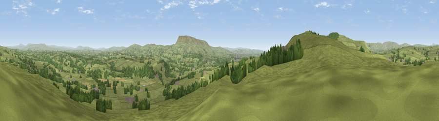

Viewpoint near Sawley
#8026 in England · top 14% of its area beats it · near SawleyThe view, rendered

A 360° render of this exact spot computed from the terrain model, tree cover and land cover — summer colours, afternoon light, calibrated against photographs of famous viewpoints. Real trees, hedges and buildings will differ in detail.
The panorama
Grey silhouette: terrain skyline in each direction (720 bearings, Earth curvature and refraction included). Dashed green: skyline with trees (+15 m) and buildings (+8 m) as obstacles. Blue strip: how far the ground is visible on each bearing.
Where the view opens
Wedge length = distance to the farthest visible ground on that bearing (vegetation-aware). Rings at 10, 25 and 50 km.
What fills the view
86% grassland · 12% woodland · 2% cropland · 1% built-up
Angular shares of the visible panorama (visual magnitude), not map area. Landscape diversity 0.22 (0–1 Shannon).
Key numbers
More beautiful places nearby
The staircase of upgrades: each row has a higher view potential than everything closer. Driving times are estimates from straight-line distance, calibrated against real road routing — check an actual route before setting out.
| Place | Direction | Drive | Score |
|---|---|---|---|
| Beacon Hill | WSW · 1 km | ~3 min | 69.2 |
| Viewpoint near Newton | W · 5 km | ~11 min | 70.2 |
| Viewpoint near Downham | SSE · 7 km | ~15 min | 75.3 |
| Viewpoint near Barley | SSE · 8 km | ~16 min | 76.3 |
| Pendle Hill | SSE · 8 km | ~16 min | 76.5 |
| Parlick | WSW · 17 km | ~30 min | 77.5 |
| Viewpoint near Scorton | W · 24 km | ~40 min | 79.9 |
| Darwen Hill | SSW · 28 km | ~45 min | 80.7 |
53.93095, -2.36206 · source: screening · position refined by local search. Computed location — check access rights before visiting.